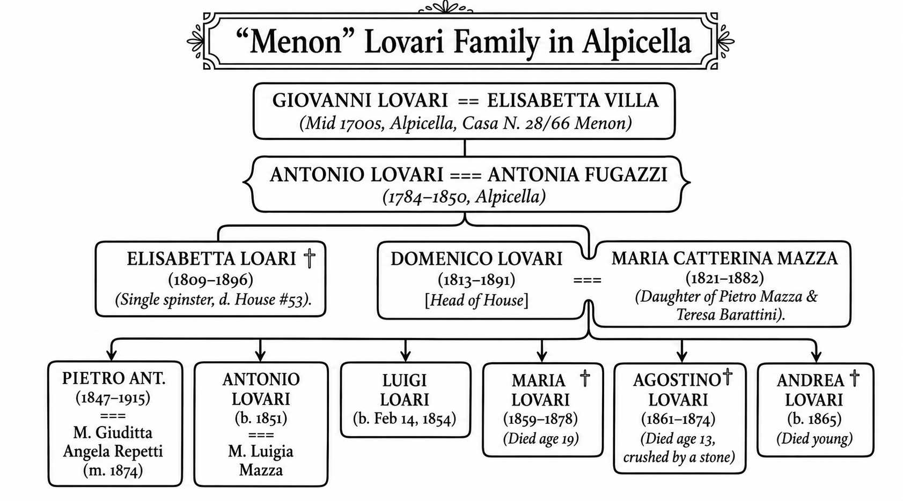
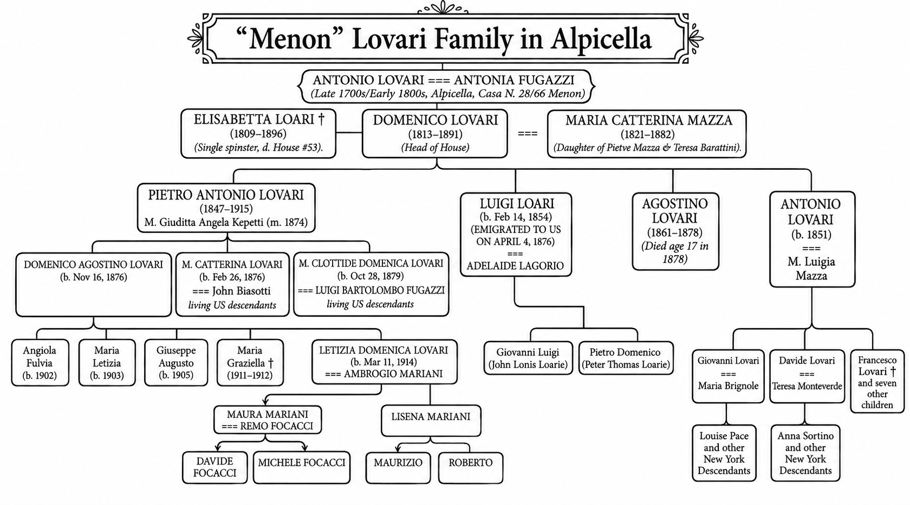

The Origins of the Loarie Name: From the Land of Wolves to the New World
Le Origini del Nome Loarie: Dalla Terra dei Lupi al Nuovo Mondo
If your last name is Loarie, you belong to a surprisingly small family. Every single person with this surname can trace their line back to one guy born about 170 years ago: Luigi Cesare Germondo Lovari, a young stonemason from Alpicella—a small mountain hamlet in the rugged backcountry of Genoa, near Santo Stefano d’Aveto.
Se il tuo cognome è Loarie, appartieni a un albero genealogico straordinariamente esclusivo. Ogni singola persona che porta questo cognome oggi può tracciare la propria linea di discendenza fino a un solo uomo nato circa 170 anni fa: Luigi Cesare Germondo Lovari, un giovane scalpellino di Alpicella—un borgo montano aspro e isolato nell'entroterra di Genova, vicino a Santo Stefano d’Aveto.

The Land of Wolves: Etymology and Origins
La Terra dei Lupi: Etimologia e Origini
Luigi's paper trail places the family firmly in Alpicella, but if you look right across the Aveto River, there’s an entirely separate, isolated village actually named Lovari.
I documenti ufficiali collocano la famiglia stabilmente ad Alpicella, ma se guardi proprio dall'altra parte del fiume Aveto, si scorge un villaggio completamente separato e isolato che porta l'esatto nome di Lovari.
Nobody with the Lovari surname is on record as having lived in that specific village. Maybe the first person with the surname Lovari came from that village—who knows. But the linguistic connections between the name Lovari and wolves are pretty compelling:
Nessuno con il cognome Lovari risulta registrato come residente in quel borgo specifico. È altamente probabile, tuttavia, che l'originario capostipite provenisse proprio da lì. I legami linguistici che connettono il nome Lovari ai lupi sono davvero affascinanti:
- The Dialect Link: In the local Ligurian dialect, the village of Lovari is called i Lue—literally, "the wolves."
- Il legame dialettale: Nel dialetto ligure locale, il villaggio di Lovari è chiamato i Lue—letteralmente, "i lupi".
- The Linguistic Shift: The Latin word for wolf is lupus. In Northern Italian and western Romance languages, that hard Latin "p" naturally softened into a "b" or a "v." You get lobo in Spanish, or luve if you're talking regional Italian dialect.
- Il mutamento linguistico: La parola latina per lupo è lupus. Nelle lingue dell'Italia settentrionale e nelle lingue romanze occidentali, quella "p" latina dura si è naturalmente addolcita in una "b" o in una "v", dando origine a lobo in spagnolo e a luve nei dialetti italiani regionali.
- The Suffix: In Italian naming conventions, the suffix -ari (from the Latin -arius) means an abundance of something, or marks a specific trait of a place—the same way Ferrari denotes a place of iron.
- Il suffisso: Nelle convenzioni onomastiche italiane, il suffisso -ari (dal latino -arius) indica l'abbondanza di qualcosa o contrassegna un tratto specifico di un luogo—allo stesso modo in cui Ferrari denota un luogo del ferro.
Put it all together, and Lovari translates to "the place of wolves" or "those from the wolf lands." Wolves play a huge role in Italian mythology, and the jagged Apennine Mountains surrounding the village served as the final stronghold of the Italian wolf as their numbers dipped below 100 individuals in the 1970s.
Metti tutto insieme e Lovari si traduce in "il luogo dei lupi" o "coloro che provengono dalle terre dei lupi." I lupi rivestono un ruolo mitico nella tradizione italiana, e le aspre montagne appenniniche che circondano il villaggio hanno fatto da ultima roccaforte al lupo italiano quando la sua popolazione è scesa sotto i 100 esemplari negli anni '70.
The Three Lovari Families in Santo Stefano d’Aveto
Le Tre Famiglie Lovari a Santo Stefano d’Aveto
Historical church registries reveal three distinct Lovari families in the Santo Stefano area: one in the village of Amborzasco and two in the tiny hamlet of Alpicella. In Alpicella, families were identified in parish records by the properties they inhabited. The two Lovari branches were given the nicknames Menon and Cianin.
I registri parrocchiali storici rivelano tre distinte famiglie Lovari nell'area di Santo Stefano: una nel villaggio di Amborzasco e due nel piccolo borgo di Alpicella. Ad Alpicella, le famiglie venivano identificate nei registri della Chiesa in base alle proprietà che abitavano. I due rami dei Lovari ricevettero i soprannomi di Menon e Cianin.
Luigi belonged to the Menon line, which can be traced back to his great-grandparents, Giovanni Lovari and Elisabetta Villa, who lived in the mid-1700s. The Cianin family traces back to a parallel patriarch from the same era named Angelo (or Vincenzo) Lovari. While deep genealogical work would undoubtedly connect these branches, our story follows the trajectory of the Menon Lovari family.
Luigi apparteneva alla linea dei Menon, che può essere tracciata a ritroso fino ai suoi bisavoli, Giovanni Lovari ed Elisabetta Villa, vissuti a metà del Settecento. La famiglia Cianin si riconduce invece a un patriarca parallelo dello stesso periodo di nome Angelo (o Vincenzo) Lovari. Sebbene una ricerca genealogica profonda collegherebbe indubbiamente questi rami, la nostra storia segue la traiettoria della famiglia Menon Lovari.
The Household of Domenico Lovari
La Famiglia di Domenico Lovari
Luigi's father—Domenico Lovari—was born during a time of intense political change. Napoleon Bonaparte had just been defeated, the Congress of Vienna tore up the map, and the ancient Republic of Genoa was dissolved, swallowed up by the Kingdom of Sardinia under the House of Savoy. Domenico didn't grow up as a proud citizen of an independent Genoese Republic; he was raised as a subject of an aggressive, expanding Piedmontese kingdom that would soon go on to unify all of Italy.
Il padre di Luigi—Domenico Lovari—nacque in un'epoca di intensi sconvolgimenti politici. Napoleone Bonaparte era appena stato sconfitto, il Congresso di Vienna aveva ridisegnato la mappa d'Europa e l'antica Repubblica di Genova fu dissolta, inghiottita interamente dal Regno di Sardegna sotto la dinastia dei Savoia. Domenico non crebbe come orgoglioso cittadino di una Repubblica genovese indipendente; fu cresciuto come suddito di un regno piemontese aggressivo ed espansionista che di lì a poco avrebbe unificato l'intera penisola italiana.

Life inside Domenico’s household was caught between the disruption of Italian unification and everyday tragedy:
La vita all'interno della famiglia di Domenico fu stretta tra le pressioni del Risorgimento italiano e profonde tragedie domestiche quotidiane:
- Pietro Lovari's military service: Domenico's eldest son either got drafted or signed up for the newly minted Italian army, likely seeing action in the late 1860s or early 1870s during the final, bloody chapters of Il Risorgimento (Italian unification).
- Il servizio militare di Pietro Antonio Lovari: Il figlio maggiore di Domenico fu arruolato o si arruolò nel neonato regio esercito italiano, vedendo probabilmente l'azione militare alla fine degli anni 1860 o all'inizio degli anni 1870, durante gli ultimi e sanguinosi capitoli del Risorgimento (l'unificazione italiana).
- Antonio’s Marriage and Migration: By late 1872, Domenico’s second eldest son married Luigia Mazza. Expecting their first child and facing a bleak economic landscape, the young family joined the early wave of mass migration from the Santo Stefano area, boarding a ship for New York City.
- Il matrimonio e la migrazione di Antonio: Verso la fine del 1872, il secondogenito sposò Luigia Mazza. In attesa del primo figlio e di fronte a un panorama economico desolante, la giovane famiglia si unì alla prima ondata di migrazione di massa dall'area di Santo Stefano, imbarcandosi su una nave per New York City.
- The Tragedy of 1874: In 1874, Domenico’s 13-year-old son, Agostino, was fatally crushed by a stone at the Villa Neri Mill just outside Alpicella.
- La tragedia del 1874: Nel 1874, il figlio tredicenne di Domenico, Agostino, rimase fatalmente schiacciato da una pietra presso il mulino di Villa Neri, appena fuori Alpicella.
- Pietro’s Marriage: Just three weeks after burying his little brother, the eldest son, Pietro, married Maria Giuditta Angela Repetti.
- Il matrimonio di Pietro: Solo tre settimane dopo aver sepolto il fratellino, il primogenito Pietro sposò Maria Giuditta Angela Repetti.
Two years after Agostino was killed, with economic prospects looking grim, the third son, Luigi, decided he’d had enough. At just 23 years old, he walked away from Alpicella to try his luck in New York City.
Due anni dopo la morte di Agostino, con prospettive economiche locali sempre più tristi, il terzo figlio, Luigi, decise che ne aveva abbastanza. A soli 23 anni, lasciò le montagne di Alpicella per tentare la fortuna a New York City.
The 1876 Voyage of the France Il Viaggio del 1876 della France
On October 26, 1876, the transatlantic steamship France dropped anchor in New York Harbor, fresh from Le Havre. Luigi’s crossing was a textbook case of "chain migration"—essentially a traveling village of local families, neighbors, and young tradesmen sticking together to cross the Atlantic.
Il 26 ottobre 1876, il piroscafo transatlantico France gettò l'ancora nel porto di New York, proveniente da Le Havre. La traversata di Luigi fu un caso da manuale di "migrazione a catena"—in sostanza un intero villaggio itinerante di famiglie locali, vicini di casa e giovani artigiani che si univano per affrontare l'Atlantico.
The ship's handwritten manifest gives you a raw look at the journey:
Il manifesto cartaceo della nave scritto a mano offre uno sguardo crudo e immediato su quel viaggio:
- The Clerical Mutation: The voyage kicked off in France, so a French port clerk took down the names phonetically and completely butchered them. The 23-year-old Luigi officially stepped into America registered as "Louis Loari." This switch from Lovari to Loari was incredibly common for a simple reason: in the local Ligurian dialect, that middle 'v' is completely silent. Here’s a document that details this Lovari vs. Loari confusion.
- La mutazione burocratica: Poiché il viaggio originò in Francia, un impiegato portuale francese registrò i nomi foneticamente, storpiandoli del tutto. Il ventitreenne Luigi entrò ufficialmente in America registrato come "Louis Loari." Questo passaggio da Lovari a Loari era una mutazione naturalissima per un motivo semplicissimo: nel dialetto ligure locale, la 'v' intermedia è completamente muta. Ecco un documento che illustra in dettaglio questa confusione tra Lovari e Loari.
- The Fugazzi Connection: Traveling right alongside Luigi were two 18-year-old boys, Fidele and Antoine Fugazzi—almost certainly his first cousins via his grandmother, Antonia Fugazzi. While the teenagers were written down as simple farmers, Luigi was logged as a mason. He’d already put in his time and finished his apprenticeship; he was the seasoned tradesman anchoring the trio.
- Il legame con i Fugazzi: A viaggiare al fianco di Luigi c'erano due ragazzi di 18 anni, Fidele e Antoine Fugazzi—quasi certamente suoi cugini di primo grado da parte della nonna, Antonia Fugazzi. Mentre i due adolescenti vennero registrati come semplici contadini, Luigi fu registrato come muratore. Avendo già completato il suo durissimo apprendistato in Italia, era l'artigiano esperto che faceva da ancora al giovane trio.
- Life in Steerage: They traveled in 4e classe (Fourth Class Steerage), meaning it was cramped, loud, and dirty. Looking at the manifest, they were surrounded by familiar names and faces from the Val d’Aveto, including Pietro Spinetto (a 63-year-old master carpenter), Giuseppe Solari (a 40-year-old merchant), and the Segalini clan.
- La vita in stiva: Viaggiarono in 4e classe (quarta classe), il che significava alloggi stretti, rumorosi e insalubri. Esaminando il manifesto, erano circondati da volti e nomi familiari della Val d'Aveto, tra cui Pietro Spinetto (un maestro carpentiere di 63 anni), Giuseppe Solari (un mercante di 40 anni) e l'esteso clan dei Segalini.
Settling New York’s South Village
Stabilirsi nel South Village di New York
After clearing the bureaucratic gauntlet at the Castle Garden immigration depot, Luigi went straight for the dense, chaotic Italian enclave of Manhattan's South Village, packing himself into a tenement flat on Thompson Street.
Dopo aver superato la trafila burocratica del centro d'immigrazione di Castle Garden, Luigi si diresse dritto verso la fitta e caotica enclave italiana del South Village di Manhattan, sistemandosi in un appartamento all'interno di un casermone su Thompson Street.
Luigi arrived during New York’s great infrastructure rush. They were right in the middle of building the IRT Sixth Avenue Line—the elevated "El" train. From 1876 to 1878, that project needed every single stone and brick mason it could get its hands on to drop the heavy foundation piers into the city dirt. It was immediate, back-breaking work for Ligurian immigrants who knew how to handle stone.
Luigi arrivò al culmine della grande corsa alle infrastrutture di New York. La città era nel bel mezzo della costruzione della IRT Sixth Avenue Line—la ferrovia sopraelevata denominata "El". Dal 1876 al 1878, quel progetto richiese una quantità immensa di muratori e scalpellino specializzati per affondare i pesanti pilastri di fondazione nel terreno di Manhattan. Fu un lavoro immediato, spossante ma ben pagato per gli immigrati liguri che sapevano come lavorare la pietra.
Surviving this urban jungle required connections, and they found them in Luigi V. Fugazzi. He was a legendary padrone (labor broker, banker, and neighborhood boss) from the exact same Santo Stefano d'Aveto region, and he was almost certainly a cousin. Fugazzi is a fascinating character—he fought alongside Giuseppe Garibaldi, got knighted by the King of Italy, and ran a political network connected straight into Tammany Hall. He’s like a one-man bridge between the romance of Italian unification and the gritty, wild-west politics of Gangs of New York. Fugazzi lined up the jobs, handled the money, and kept the pipeline open for families moving from Liguria to Greenwich Village.
Sopravvivere in questa giungla urbana richiedeva potenti contatti, e loro li trovarono in Luigi V. Fugazzi. Era un leggendario padrone (intermediario del lavoro, banchiere e boss di quartiere) proveniente dalla stessa identica regione di Santo Stefano d'Aveto, ed era quasi certamente un cugino. Fugazzi è un personaggio storico affascinante—combatté al fianco di Giuseppe Garibaldi, fu nominato cavaliere dal Re d'Italia e gestì una rete politica integrata direttamente nella Tammany Hall. È come un ponte vivente tra il romanticismo del Risorgimento italiano e la politica cruda e selvaggia della Manhattan dell'epoca di Gangs of New York, assicurando posti di lavoro e alloggi per il flusso costante di arrivi dalla Liguria.
By 1880, Luigi had his feet under him, marrying Adelaide Lagorio in the South Village, who was from Mezzanego—a village just down the mountains from Santo Stefano, a little closer to the coast.
Nel 1880 Luigi aveva ormai consolidato la sua posizione, sposando nel South Village Adelaide Lagorio, un'immigrata originaria di Mezzanego—un paesino situato appena sotto le montagne rispetto a Santo Stefano, un po' più vicino alla costa ligure.

A Family Divided: Italy and New York
Una Famiglia Divisa: Italia e New York
From this point forward, a dizzying cycle of transatlantic travel eventually fractured the family into distinct branches: those who rooted themselves permanently in American soil, and those who returned to the old country.
Da quel momento in poi, una serie vorticosa di viaggi transatlantici finì per dividere la famiglia in due rami distinti: quelli che misero radici permanenti sul suolo americano e quelli che fecero ritorno nella terra natia.
1. The Line of Antonio Lovari (Italy & New York)
1. Il Ramo di Antonio Lovari (Italia e New York)
Antonio, the first brother to cross, had a tragic, restless trajectory. Settling on Sullivan Street, he and Luigia had three more children before abruptly returning to Alpicella by 1880, where their fifth child, Francesco, was born. Leaving his family in the safety of the mountains, Antonio returned to New York alone to work as a bricklayer. By 1883, Luigia and the children rejoined him on Thompson Street.
Antonio, il primo dei fratelli a compiere la traversata, ebbe una traiettoria tragica e irrequieta. Stabilitosi in Sullivan Street nel South Village italo-americano, lui e Luigia ebbero altri tre figli prima di fare un improvviso ritorno ad Alpicella entro il 1880, dove nacque il loro quinto figlio, Francesco. Lasciata la famiglia al sicuro tra le montagne, Antonio tornò da solo a New York per lavorare come muratore. Nel 1883, Luigia e i figli lo raggiunsero nuovamente su Thompson Street.
The year 1884 brought immense grief. After welcoming twins (Giovanni and Clotilde) in the spring, both infants died months apart. Eighteen months later, in 1886, their four-year-old son Francesco died in the same tenement apartment.
L'anno 1884 portò un immenso dolore per Antonio e Luigia. Dopo aver accolto due gemelli (Giovanni e Clotilde) in primavera, entrambi i neonati morirono a pochi mesi di distanza. E appena diciotto mesi dopo, nel 1886, il piccolo Francesco di quattro anni, nato ad Alpicella, morì nello stesso appartamento di Thompson Street.
Despite these devastating losses, Antonio and Luigia had three more children in New York before returning permanently to Alpicella by 1895 with their youngest offspring. Their adult children remained in America. By World War I, draft cards show that Antonio’s sons—Giuseppe, Giovanni, Davide, and Augusto—were all living within a few blocks of each other in the South Village. Today, Giovanni’s descendants (via his daughter Louise Pace) still reside in New York, as do those of Davide, who is buried in Calvary Cemetery in Queens.
Nonostante queste devastanti perdite, Antonio e Luigia ebbero altri tre figli a New York prima di fare ritorno definitivamente ad Alpicella intorno al 1895 con la prole più giovane. I figli più grandi, ormai ventenni, rimasero a New York. All'epoca della Prima Guerra Mondiale, le cartoline di leva mostrano che i figli di Antonio—Giuseppe, Giovanni, Davide e Augusto—vivevano tutti a pochi isolati di distanza l'uno dall'altro nel South Village. Oggi i discendenti di Giovanni (attraverso la figlia Louise Pace) vivono ancora a New York, così come quelli di Davide, che è sepolto nel Calvary Cemetery nel Queens, dove molte famiglie italiane si trasferirono dopo essere sfuggite ai casermoni di Manhattan.
2. The Line of Pietro Lovari (Italy & New York)
2. Il Ramo di Pietro Lovari (Italia e New York)
Back home in Alpicella, Luigi’s older brother, Pietro, stayed behind and raised three kids: Domenico Agostino, Maria Catterina, and Maria Clotilde Domenica. In 1883, Pietro took his daughters across the Atlantic to join the New York South Village scene. Maria Catterina married John Biasotti, while Maria Clotilde married Luigi Bartolomeo Fugazzi, both staying in New York to start families.
A casa ad Alpicella, il fratello maggiore di Luigi, Pietro, rimase inizialmente lì e crebbe tre figli: Domenico Agostino, Maria Catterina e Maria Clotilde Domenica. Nel 1883, Pietro portò le sue figlie oltreoceano per unirsi alla realtà del South Village di New York. Entrambe si stabilirono lì: Maria Catterina sposò John Biasotti, mentre Maria Clotilde sposò Luigi Bartolomeo Fugazzi, rimanendo a New York per mettere su famiglia.
Pietro eventually returned to Italy. In 1910, he took one last trip across the ocean to see his daughters, listing his son, Domenico Agostino, as his contact back in Alpicella. Pietro returned home and died in Alpicella, and his son Domenico Agostino seems to have never left the valley. Today, Pietro’s bloodline lives on in America through his daughters (the Biasotti and Fugazzi families), while his son's line is still living in Alpicella.
Pietro alla fine fece ritorno in Italia. Nel 1910 compì un ultimo viaggio oltreoceano per far visita alle figlie, indicando suo figlio, Domenico Agostino, come suo contatto di riferimento ad Alpicella. Pietro ritornò a casa e morì ad Alpicella, e suo figlio Domenico Agostino sembra non aver mai lasciato la valle. Oggi la stirpe americana di Pietro continua attraverso le sue figlie (le famiglie Biasotti e Fugazzi), mentre la linea di suo figlio risiede tuttora radicata ad Alpicella.
3. The Line of Luigi Loari (New York to Chicago)
3. Il Ramo di Luigi Loari (Da New York a Chicago)
Luigi and Adelaide raised two boys in the New York tenements: Giovanni Luigi and Pietro Domenico. After Luigi died young, Adelaide remarried and took the family westward to Chicago. Out in the Midwest, the two brothers permanently locked in the American version of the name:
Luigi e Adelaide crebbero due ragazzi nei casermoni di New York: Giovanni Luigi e Pietro Domenico. Dopo la morte prematura di Luigi, Adelaide si risposò e portò la famiglia a ovest, verso Chicago. Lì nel Midwest, i due fratelli impressero per sempre l'americanizzazione della propria identità:
- Both brothers wound up marrying Irish immigrant women: Giovanni married Honor Cahill and Pietro married Alice Lester.
- Entrambi i fratelli finirono per sposare donne immigrate irlandesi: Giovanni sposò Honor Cahill e Pietro sposò Alice Lester.
- They slapped an "e" onto the tail end of the surname for good, completely anglicizing who they were to become John Louis Loarie and Peter Thomas Loarie.
- Aggiunsero una "e" alla fine del cognome, anglicizzando definitivamente il nome di famiglia per diventare John Louis Loarie e Peter Thomas Loarie.
Today, every living Loarie traces their line back to Peter Thomas and John Louis. John Louis was my great-grandfather. For me, having to constantly explain that it "rhymes with glory"—a name packed with every vowel except u—is a small price to pay. It’s more than offset by knowing its history: a name born in the wolf lands of Santo Stefano that found its way to the Irish-Italian neighborhoods of Chicago.
Oggi, ogni Loarie in vita traccia la propria linea genealogica fino a questi due fratelli: Peter Thomas e John Louis. John Louis era il mio bisnonno. Per me, dover spiegare continuamente che "fa rima con glory" — un'anomalia linguistica ricca di ogni vocale tranne la u — è un piccolo prezzo da pagare. È ampiamente ripagato dal conoscerne la storia: un nome nato nelle terre dei lupi di Santo Stefano che ha trovato la sua strada fino ai quartieri italo-irlandesi di Chicago.

Future Work
Ricerche Future
Even with all these pieces in place, there are still a few loose ends I haven't been able to tie down. I’d love to be able to go back far enough to unite the 3 Lovari families (the one in Amborzasco and the two in Alpicella) which would require diving deeper in to the 1700s.
Anche con tutti questi tasselli al loro posto, ci sono ancora alcuni fili in sospeso che non sono riuscito a riannodare. Mi piacerebbe moltissimo poter andare abbastanza indietro nel tempo per collegare le 3 famiglie Lovari (quella di Amborzasco e le due di Alpicella), il che richiederebbe di scavare più a fondo nel 1700.
I’d also like to do a similar study of the descendants of the ‘Cianin’ Lovari family in Alpicella which includes descendands in the US descending through Josephine Lovari and Louis Mazza from Ohio and ‘Cianin’ Lovari's still living in Alpicella (see Fabio Lovari, below).
Vorrei anche fare uno studio simile sui discendenti della famiglia Lovari 'Cianin' di Alpicella, che include i rami negli Stati Uniti discendenti da Josephine Lovari e Louis Mazza dell'Ohio, e i Lovari 'Cianin' che vivono ancora ad Alpicella (vedi Fabio Lovari, qui sotto).
My Visit to the South Village
La Mia Visita al South Village
Last year, I stayed with a friend in the South Village and spent some time exploring Luigi’s neighborhood. I hit the exact block on Thompson Street where Luigi used to live, but time has wiped out any physical trace of that 1870s immigrant hustle. I wanted to check out the Lower East Side Tenement Museum nearby—which I hear is great—but it was closed for the day. In the end, the closest thing to a real, physical link to that era was the big statue of Giuseppe Garibaldi standing out in Washington Square Park, looking over the neighborhood that was once a cramped microcosm of Italy in the middle of New York City.
L'anno scorso ho alloggiato da un amico nel South Village e ho trascorso del tempo a esplorare il quartiere di Luigi. Sono andato proprio nell'isolato di Thompson Street dove viveva Luigi, ma il tempo ha completamente cancellato ogni traccia fisica di quel fermento migratorio degli anni 1870. Volevo visitare il vicino Lower East Side Tenement Museum—di cui mi hanno parlato benissimo—ma per quel giorno era chiuso. Alla fine, la cosa più vicina a un vero legame fisico con quell'epoca è stata la grande statua di Giuseppe Garibaldi che svetta in Washington Square Park, affacciata su quello che un tempo era un ristretto microcosmo d'Italia nel cuore di New York City.


My Visit to Alpicella
La Mia Visita ad Alpicella
Jokes from The White Lotus and Saturday Night Live aside, this summer I actually made the pilgrimage up into Santo Stefano. We drove the winding mountain roads up from Chiavari on the coast, making our first stop at Rezzoaglio. I wanted to see the Nuovo Liquorificio Fabbrizii distillery—it’s run by a local Fugazzi family—but sadly it had closed down two years ago. I managed to find a bottle of their amaro at a small nearby grocery store before we pushed on to the actual village of Lovari.
Ironie a parte su The White Lotus e Saturday Night Live, quest'estate ho fatto davvero il pellegrinaggio fino a Santo Stefano. Abbiamo percorso i tornanti di montagna salendo da Chiavari sulla costa, facendo la nostra prima sosta a Rezzoaglio. Volevo visitare la distilleria Nuovo Liquorificio Fabbrizii—gestita da una famiglia Fugazzi locale—ma purtroppo aveva chiuso i battenti due anni fa. Sono riuscito a scovare una bottiglia del loro tradizionale amaro in un piccolo negozio di alimentari lì vicino, prima di proseguire verso il vero e proprio villaggio di Lovari.


The next day, right by the old stone walls of Malaspina Castle in the center of Santo Stefano d’Aveto, I met up with Fabio Lovari. He works for the Rezzoaglio Municipality and lives in Alpicella and descends from the "Cianin" Lovari’s in Alpicella.
Il giorno dopo, proprio accanto alle antiche mura di pietra del Castello Malaspina, nel centro di Santo Stefano d'Aveto, ho incontrato Fabio Lovari. Lavora per il Comune di Rezzoaglio, vive ad Alpicella e discende dai Lovari "Cianin" di Alpicella
Fabio was kind enough to introduce me to Antoniuccia Sbertoli over at the Santo Stefano d’Aveto Municipality. She helped me hunt through the Fogli di Famiglia—the old, handwritten household ledgers—to locate Domenico Lovari's original records. Out of nowhere, she pulled a thread and connected me directly to the living descendants of Luigi’s brother Pietro’s son, Domenico Agostino. They’re still living right there in Alpicella—my actual fourth cousins!
Fabio è stato così gentile da presentarmi ad Antoniuccia Sbertoli del Comune di Santo Stefano d'Aveto. Mi ha aiutato a scartabellare tra i Fogli di Famiglia—i vecchi registri storici di stato di famiglia scritti a mano—per rintracciare i documenti originali di Domenico Lovari. Dal nulla, ha tirato un filo e mi ha collegato direttamente ai discendenti in vita di Domenico Agostino, figlio di Pietro (il fratello di Luigi). Vivono ancora proprio lì ad Alpicella—i miei veri cugini di quarto grado!


Meeting my fourth cousins—Davide Focacci, Maurizio Mariani, and Maurizio’s son, Lorenzo—standing in the exact town the Lovaris came out of was an amazing experience. First, they showed me the Alpicella cemetery. The old graveyard was abandoned years ago, meaning if you wanted to keep your ancestors, you had to move them into the modern cemetery plots. Davide showed me how tight things got: his great-grandfather, Domenico Agostino Lovari, was actually stacked into the exact same concrete slot as his own son, Giuseppe, because the new graveyard ran out of room.
Incontrare i miei cugini di quarto grado—Davide Focacci, Maurizio Mariani e suo figlio Lorenzo—proprio nel paese da cui provenivano i Lovari è stata un'esperienza incredibile. Per prima cosa mi hanno mostrato il cimitero di Alpicella. Il vecchio camposanto è stato abbandonato anni fa, il che significa che se si volevano conservare i propri antenati occorreva trasferirli nei loculi del cimitero moderno. Davide mi ha mostrato quanto le cose si fossero fatte strette: suo bisnonno, Domenico Agostino Lovari, è stato letteralmente inserito nello stesso identico loculo di cemento di suo figlio Giuseppe, perché il nuovo cimitero aveva esaurito lo spazio.


We walked around the village of Alpicella—which has a great Instagram page to give you the flavor of it—and then we explored the old, heavily overgrown historic graveyard where Domenico would have been buried. Davide told me the individual markers were long gone, but the place is still thick with familiar names from the family tree like Fugazzi and Mazza.
Abbiamo camminato per il borgo di Alpicella—che ha un'ottima pagina Instagram per renderne l'atmosfera—e poi abbiamo esplorato il vecchio cimitero storico, completamente sommerso dalla vegetazione, dove Domenico sarebbe stato sepolto. Davide mi ha spiegato che le singole lapidi sono ormai scomparse da tempo, ma il luogo è ancora pieno di nomi familiari del nostro albero genealogico come Fugazzi e Mazza.
Right there in the bushes, I stumbled on one headstone that completely stops you in your tracks. It’s a weathered monument for a husband and wife, and the Italian carved into it says everything you need to know about the immigrant experience:
Proprio lì tra le frasche, mi sono imbattuto in una lapide che ti blocca all'istante. È un monumento consumato dal tempo dedicato a due coniugi, e l'italiano scolpito sopra esprime tutto ciò che c'è da sapere sull'esperienza migratoria:
blockquote>Questo pio ricordo del suo diletto consorte
Mazza Giovanni fu Michele
morto di 31 anni nel 1883
pose Mazza Caterina
che colla famiglia in terra straniera
provò tutto il peso della vedovanza.
English Translation: "This pious remembrance of her beloved spouse, Giovanni Mazza, son of the late Michele, who died at 31 years of age in 1883, was placed by Caterina Mazza, who, with her family in a foreign land, felt the full weight of widowhood."
Traduzione: "Questo pio ricordo del suo diletto consorte, Giovanni Mazza, fu Michele, morto a 31 anni nel 1883, fu posto da Caterina Mazza che con la famiglia in terra straniera provò tutto il peso della vedovanza."
That phrase right there—in terra straniera (in a foreign land)—is a raw, permanent reminder of how tight the loop is between the mountains of Santo Stefano and the packed tenements of New York's South Village. It carved into stone the heavy, brutal toll migration took on these people—both the ones who got on the boat and the ones who stayed behind.
Quella precisa frase—in terra straniera—è un promemoria crudo e permanente di quanto sia stretto il legame tra le montagne di Santo Stefano e i casermoni affollati del South Village di New York. Ha impresso nella pietra il peso enorme e brutale che la migrazione ha imposto a queste persone—sia a quelle che sono salite sulla nave, sia a quelle che sono rimaste indietro.
My cousins Davide and Maurizio are living proof of how fluid that history really was. Their great-great-grandfather Pietro took the massive gamble to go to America, but ultimately decided to come right back to these exact mountains. Standing there with them was a reminder of how small and connected the world is, and how you can reach across so much history in just a few generations.
I miei cugini Davide e Maurizio sono la prova vivente di quanto questa storia sia stata fluida. Il loro trisnonno Pietro tentò il grande azzardo di andare in America, ma alla fine decise di tornare proprio tra queste medesime montagne. Stare lì con loro è stato un promemoria di quanto il mondo sia piccolo e interconnesso, e di come si possa scavalcare così tanta storia in pochissime generazioni.